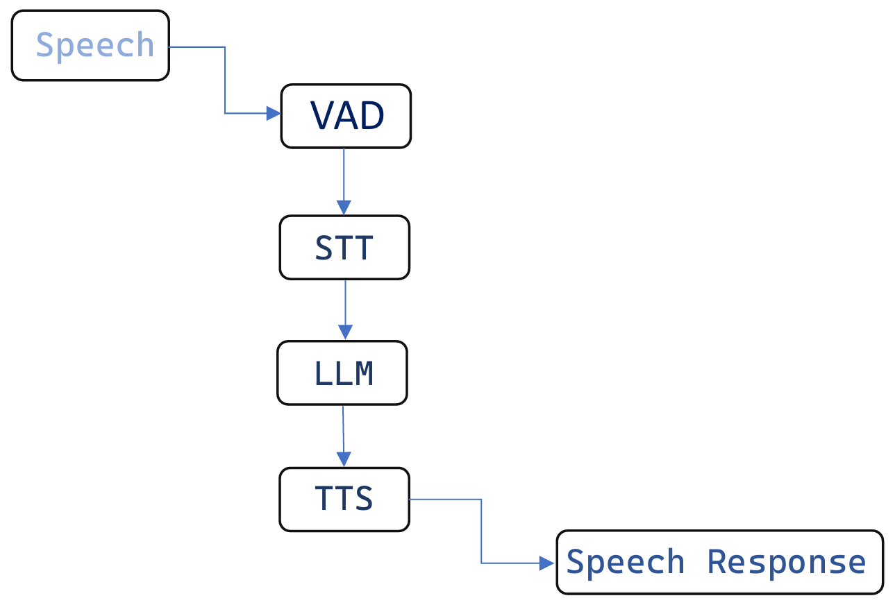

ORION
A Personal Voice Assistant
ORION is a Personal Voice Assistant, Which takes User Speech as an input and give Speech as a output, Its like your are talking to a Person who knows every question you know
Working
ORION Works With the help of different AI Models in A pipeline
1. VAD
Voice Activity Detection :
is use to determine wether the user is speaking or not
It work with the help of spectrogram if ther is any disturbance in the spectrogram and if it is caused by a human it will be activate and then it will pass on the voice
2. STT
Speech To Text :
is used to extract the word spoken by the user
It works with the help of OpenAi Whisper Model which convert speech into text
3. LLM
Large Language Model
Is used to generate human like responces
it works whith the help of meta llama 3.2 model which generate responce based on the query